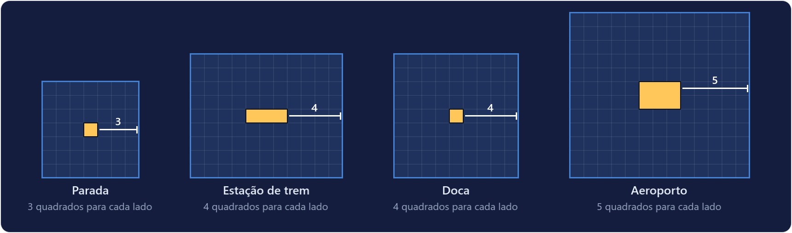

Área de cobertura
Até onde uma estação alcança.
Uma estação coleta e entrega em tudo o que está dentro da sua área de cobertura: um quadrado em volta de cada um dos seus quadrados. Aqui estão os quatro tipos na mesma escala.


Enquanto você posiciona uma estação, a área azul no mapa é a área de cobertura dela, e o jogo diz o que ela aceitaria e forneceria.
O que uma estação fornece
- A produção de todas as indústrias dentro da área.
- Passageiros e correio de cada prédio lá dentro e, a partir de 1980, também resíduos.
- Passageiros voltando para casa de uma indústria dentro dela que queira pessoal.
- A carga só começa a se acumular quando um veículo que a leva tem a estação nas suas ordens.
O que uma estação aceita
| Carga | Aceita quando a área tem |
|---|---|
| Tudo o que uma indústria usa | uma indústria que o usa |
| Passageiros | pelo menos 12 pessoas, ou uma indústria que queira pessoal |
| Correio | pelo menos 30 pessoas |
| Mercadorias, Alimentos | pelo menos 60 pessoas |
| Jornais | casas de uma cidade com pelo menos 150 habitantes |
| Eletrônicos | a partir de 1995, uma torre de escritórios, um shopping ou um parque tecnológico |
| Carros | a partir de 1995, casas de uma cidade com pelo menos 1.000 habitantes |